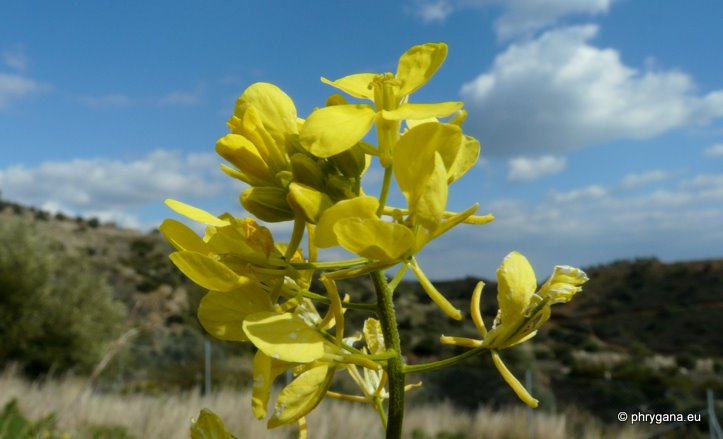
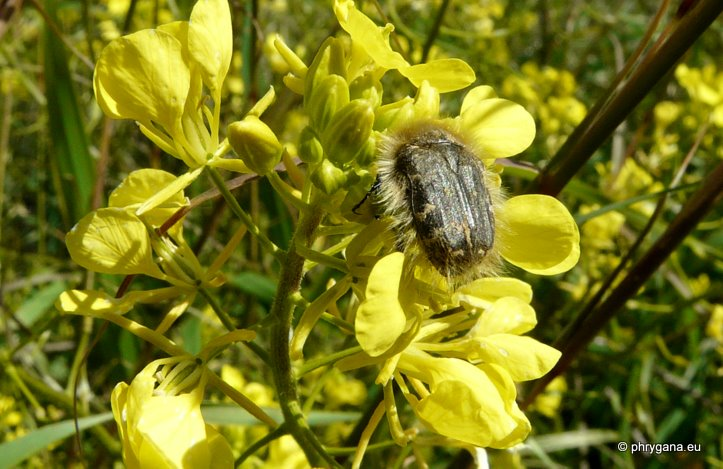
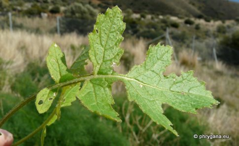
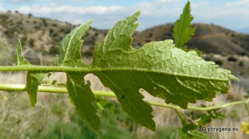
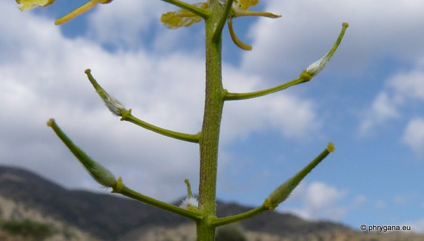
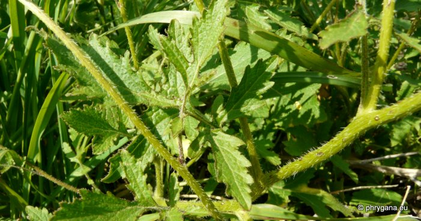

| PHRYGANA | Fauna | Flora | Galles | liste des espèces |
contact -
info - commentaires phrygana1 (at) gmail.com |
| Particularités crétoises | nouveautés | Mines | ressources naturelles |
| Sinapis alba subsp. mairei (H. LINDB.) MAIRE |
| 328 | Flora | BRASSICACEAE | Sinapis L. |
|
 Sinapis alba subsp. mairei Agios Giorgos (Melambes) 18 février 2012 |
| en: White Mustard fr: la Moutarde blanche | |
| Plante poilue hérissée à poils raides, ramifiée dès la base | |
| Feuilles: velues, pétiolées, lyrées à pennatipartites; segments sinués-dentés | |
| Fleurs: groupées en panicules assez grandes; corolle jaune pâle à jaune vif (8 - 14 mm) | |
| Fruit: pédicelles fructifères étalés; une silique déhiscente longue de 20 - 40 x 3 - 4 mm; bec aplati, ailé à la base, plus grand que les valves; graines brun foncé à noires | |
| Hauteur: 20 - 80 cm | Type biologique: thérophyte ramifié |
| Floraison: janvier février mars avril mai | |
| Altitudes: 0 - 700 m | |
| Statut en Crète: indigène | |
| Biotopes en Crète: olivaies, cultures, terrains vagues, jardins, côtes sableuses | |
| Distribution: Crète, région Méditerranéenne | |
| Espèce héliophile. | |
| Usage culinaire: en Crète: les jeunes pousses (en petites portions) sont mangées crues en salade, braisées ou cuites au four; ses graines sont utilisées moulues pour la confection de la moutarde | |
|
Plante
médicinale: parties
utilisées ==> les graines |
|
|
 Sinapis alba subsp. mairei Agios Giorgos (Melambes) 18 février 2012 |
|

 Sinapis alba subsp. mairei Agios Giorgos (Melambes) 18 février 2012 |
|
 Sinapis alba subsp. mairei Agios Giorgos (Melambes) 18 février 2012 |
|
 Sinapis alba subsp. mairei Agios Giorgos (Melambes) 18 février 2012 |
| 07 septembre 2012 |
| © paul fontaine 2007 -- 2012 |